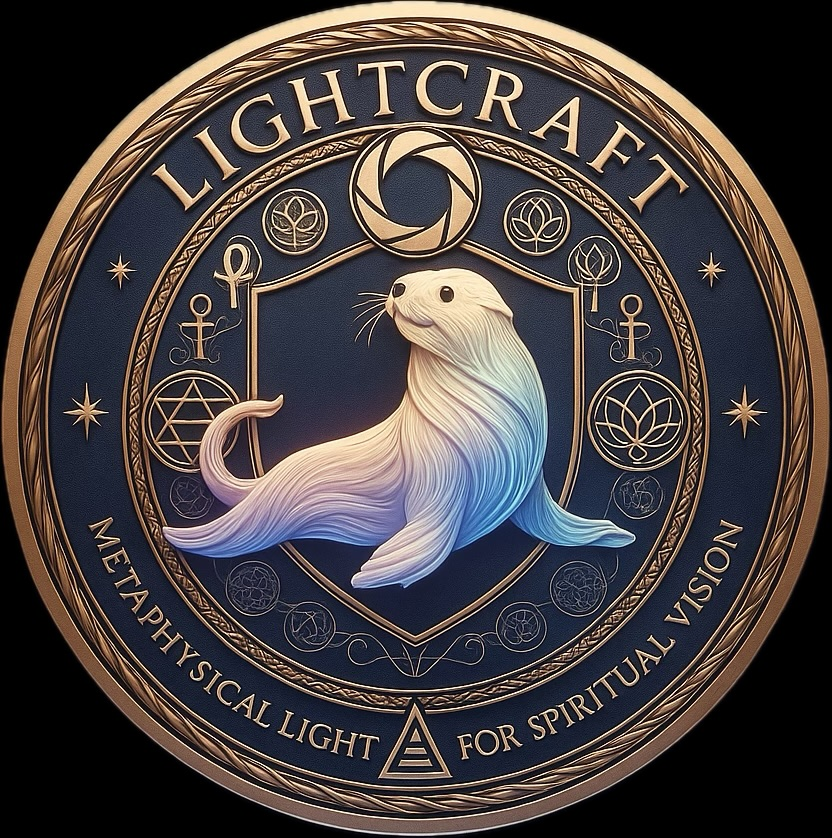
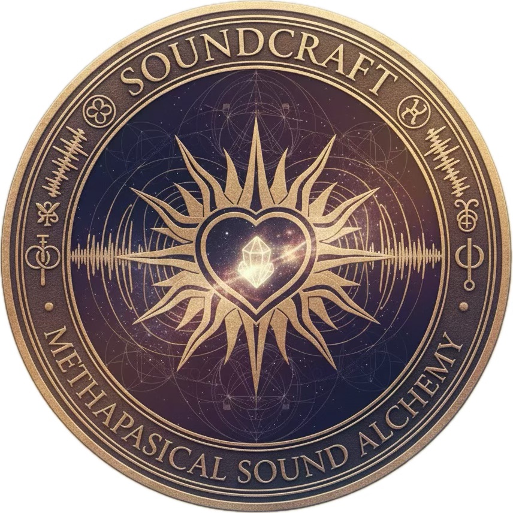

Eternal knowledge, Knowledge for all
LightCraft is "a practice involving light and esoteric mathematics and systems of knowledge to create trance-inducing and/or metaphysically beneficial video art".
SoundCraft is "a metaphysical practice that uses sound, frequencies, and intentional audio design to generate energetic healing, resonance, and spiritual modulation. It focuses on shaping the listener's inner state through vibration, rhythm, and harmonic structure rather than hypnosis".
